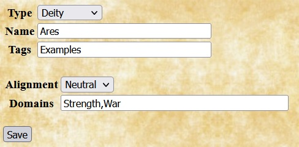
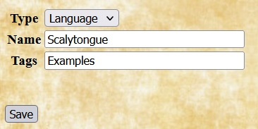

The PF4SW rule set allows you to add homebrew choices to all of the same types discussed in the SWADE Homebrew Examples document other than era. (The race type in SWADED is replaced by ancestry in PF4SW.) In addition, PF4SW also allows you to add homebrew deities and languages.
Deities |
For homebrew deities, Quilvyn displays fields for entering the deity's alignment and list of domains. The example shows the entry for the Greek deity Ares, a neutral god of strength and war. |
Languages |
Adding a homebrew language requires only specifying the language name. The example shows an entry for a reptilian language called Scalytongue. |